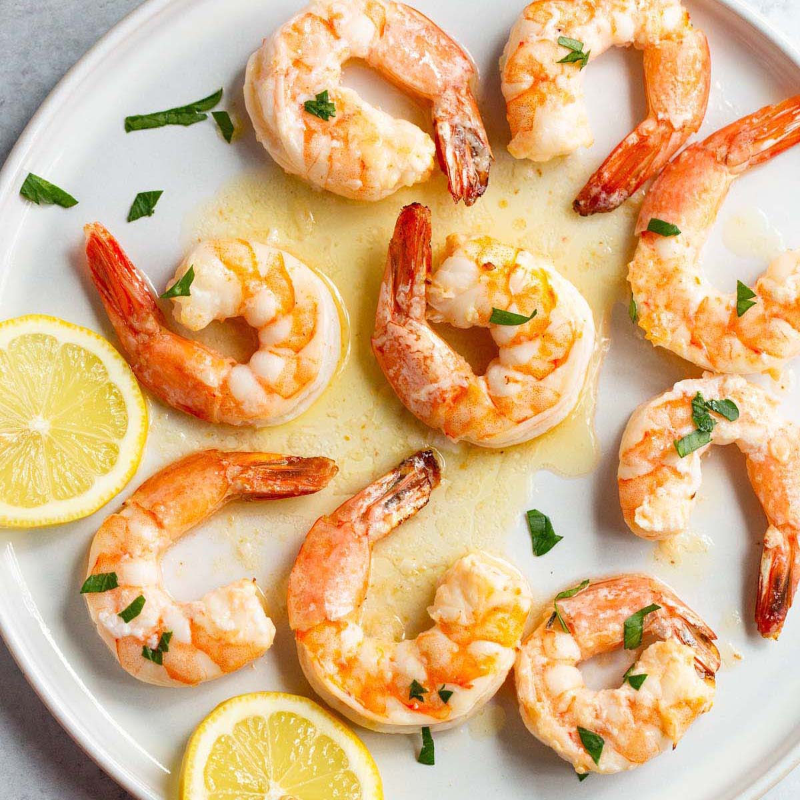

Back to Recipes
Garlic Butter Shrimp

Description
Garlic Butter Shrimp is a quick and easy dish that is packed with flavor. The shrimp are sautéed in a rich garlic butter sauce, making them perfect for serving over pasta or rice.
Ingredients
- 1 pound shrimp, peeled and deveined
- 4 tablespoons butter
- 4 cloves garlic, minced
- 1 teaspoon red pepper flakes (optional)
- Salt and pepper to taste
- Fresh parsley, chopped (for garnish)
- Lemon wedges (for serving)
Instructions
- In a large skillet, melt the butter over medium heat.
- Add the minced garlic and red pepper flakes (if using) and sauté for about 1 minute, until fragrant.
- Add the shrimp to the skillet and season with salt and pepper. Cook for 2-3 minutes on each side, until the shrimp are pink and opaque.
- Remove from heat and garnish with fresh parsley.
- Serve with lemon wedges on the side.